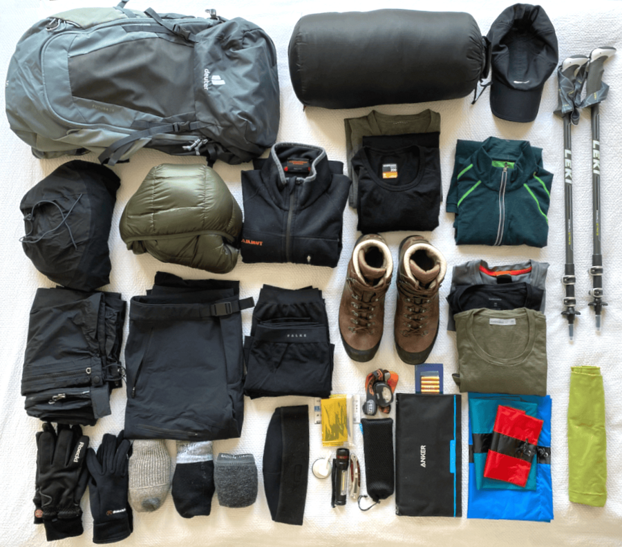

Son iki haftada ekipmanımızı tamamladık. Yani esas olarak Yeşim'in ekipmanını aldık. Nepal'e ve Ağrı Dağı'na yaptığım önceki turlardan bazı eşyalar hâlâ bende ve onları kullanmaya devam edeceğim, örneğin uyku tulumu, ayakkabılar, eldivenler, polar ceket ve yağmurluklar. Gerisini ise benim de satın almam gerekti.
Muhtemelen yanıma şunları alacağım:
- Yürüyüş ayakkabısı
- Yürüyüş batonları
- Günlük sırt çantası (26 litre)
- Uyku tulumu
- Kaz tüyü mont
- Yağmurluk
- Yağmur pantolonu
- Kalın eldiven
- İnce eldiven
- Bere
- Beyzbol şapkası
- 3x yürüyüş çorabı
- 1x ince çorap
- Trekking pantolonu
- Polar ceket
- 2x uzun kollu tişört
- 1x fermuarlı uzun kollu tişört
- 3x tişört
- 1 uzun iç çamaşırı
- 3 boxer
- Mikrofiber havlu
- Su torbası (2 litre)
- İlaçlar
- Banyo malzemeleri
- Kamera & elektronik

Gördüğünüz gibi hepsi çok siyah ve antrasit. Biraz daha renkli olmasını isterdim ama gerçekten büyük bir renk seçeneği yoktu. En azından erkekler için. Yeşim daha renkli şeyler alabildi; özellikle Rab marka turuncu-kırmızı kaz tüyü montunu çok beğeniyorum.
Bir de her birimize birer duffle bag, yani denizci çantası lazım. Bunu orada organizatörden alabiliriz. Belki de burada alıp kendi çantalarımızı götürürüz. Henüz karar vermedik. Bu, kişisel eşyalarımızı (dönüş için) otelde bırakmak isteyip istemediğimize de bağlı. 2009'da bunu yapmamıştım ve gerçekten sadece taşıdığım şeyleri götürmüştüm. Ama dönüşte İstanbul'da bir mola verip Yeşim'in doğum gününü kutlayacağız, o yüzden bir şeyler götürmek mantıklı.
Anker markasından bir güneş paneli aldım ve ne kadar iyi şarj ettiğini test ediyorum. İşe yararsa onu da götüreceğim. Önceki seferlerimde elektrik kıt bir şeydi.
Toplamda ekipman bize 3.000 EUR'ya mal oldu; dediğim gibi bir kısmını zaten almama gerek kalmadı. Aksi halde 4.000 EUR harcardık diye düşünüyorum. Bu çok gibi gelebilir, ama ürünlerin hepsi gerçekten çok kaliteli ve uzun ömürlü. Benim eşyalarım 12 yıldır bende ve düzenli olarak kullanıyorum. Uyku tulumundan muhtemelen tasarruf edip orada organizatörden kiralayabilirsiniz. Ama uyku tulumu da sonuçta oldukça kişisel bir şey. Birçok şeyi doğrudan Katmandu'da da satın alabilirsiniz. Ama ben iyi hazırlanmayı ve orada telaşa düşmemeyi tercih ediyorum.
Daha birkaç enerji barı ve ilaçları almamız gerekiyor. Bununla ilgili daha fazlası bir dahaki sefere.